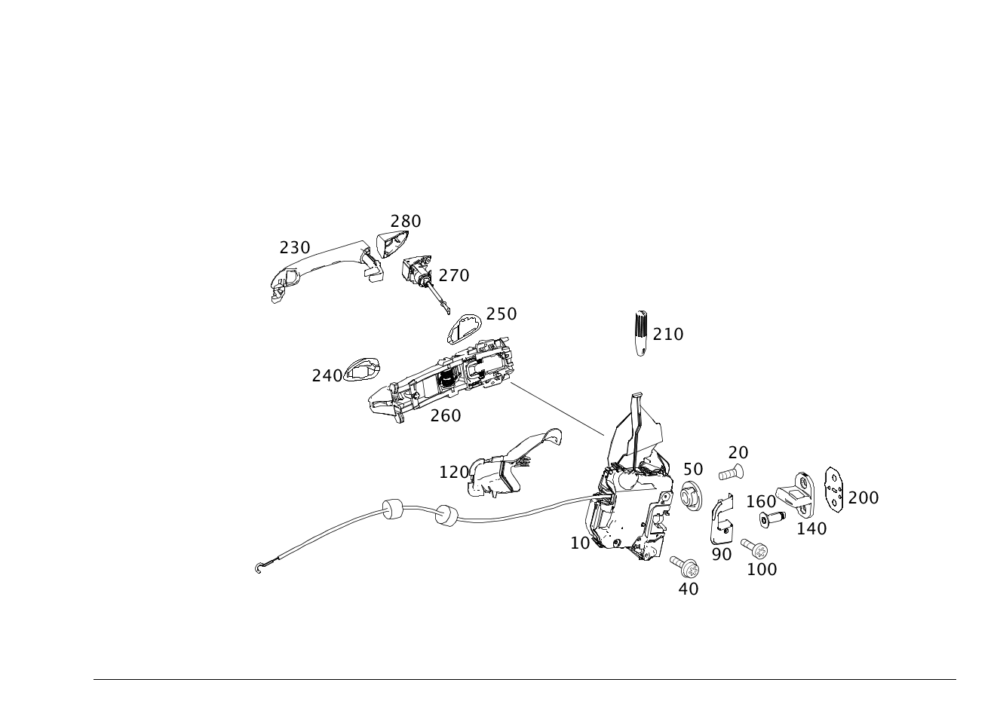

| № | Артикул | Название | Кол. | Примечание | Ограничение |
|---|---|---|---|---|---|
| 10 | A 171 720 01 35 | ЗАМОК | 1 | СЛЕВА Рулевое управление: Влево | |
| 10 | A 171 720 25 35 | Замок (SCHLOSS) | 1 | СЛЕВА Рулевое управление: Влево | |
| 10 | A 171 720 04 35 | ЗАМОК | 1 | СПРАВА Рулевое управление: Влево | |
| 10 | A 171 720 28 35 | Замок (SCHLOSS) | 1 | СПРАВА Рулевое управление: Влево [402] БОЛЬШЕ НЕ ПОСТАВЛЯЕТСЯ | |
| 10 | A 171 720 15 35 | ЗАМОК | 1 | ИНФРАКРАСН., СЛЕВА Рулевое управление: Влево | 880 |
| 10 | A 171 720 25 35 | Замок (SCHLOSS) | 1 | ИНФРАКРАСН., СЛЕВА Рулевое управление: Влево | 880 |
| 10 | A 171 720 18 35 | ЗАМОК | 1 | ИК,СПРАВА Рулевое управление: Влево | 880 |
| 10 | A 171 720 28 35 | Замок (SCHLOSS) | 1 | ИК,СПРАВА Рулевое управление: Влево [402] БОЛЬШЕ НЕ ПОСТАВЛЯЕТСЯ | 880 |
| 10 | A 171 720 28 35 | Замок (SCHLOSS) | 1 | ИК,СПРАВА Рулевое управление: Влево [402] БОЛЬШЕ НЕ ПОСТАВЛЯЕТСЯ | 880+494 |
| 10 | A 171 720 03 35 | ЗАМОК | 1 | СЛЕВА Рулевое управление: Вправо | |
| 10 | A 171 720 27 35 | Замок (SCHLOSS) | 1 | СЛЕВА Рулевое управление: Вправо | |
| 10 | A 171 720 02 35 | ЗАМОК | 1 | СПРАВА Рулевое управление: Вправо | |
| 10 | A 171 720 26 35 | Замок (SCHLOSS) | 1 | СПРАВА Рулевое управление: Вправо | |
| 10 | A 171 720 17 35 | ЗАМОК | 1 | ИНФРАКРАСН., СЛЕВА Рулевое управление: Вправо | 880 |
| 10 | A 171 720 27 35 | Замок (SCHLOSS) | 1 | ИНФРАКРАСН., СЛЕВА Рулевое управление: Вправо | 880 |
| 10 | A 171 720 16 35 | ЗАМОК | 1 | ИК,СПРАВА Рулевое управление: Вправо | 880 |
| 10 | A 171 720 26 35 | Замок (SCHLOSS) | 1 | ИК,СПРАВА Рулевое управление: Вправо | 880 |
| 20 | A 140 984 30 29 | Винт Torx с полукр. гол. (LINSENKOPFSCHRAUBE M. ISR) | 2 | ЗАМОК ДВЕРИ НА ДВЕРИ; M6X14 | |
| 20 | A 140 984 30 29 | Винт Torx с полукр. гол. (LINSENKOPFSCHRAUBE M. ISR) | 2 | ЗАМОК ДВЕРИ НА ДВЕРИ; M6X14 | |
| 40 | N 000000 001474 | Винт с 6-гр. глвк (SECHSRUNDSCHRAUBE) | 1 | ЗАМОК К ВНУТРЕННЕЙ ЧАСТИ ДВЕРИ; M6X10 | |
| 40 | N 000000 001474 | Винт с 6-гр. глвк (SECHSRUNDSCHRAUBE) | 1 | ЗАМОК К ВНУТРЕННЕЙ ЧАСТИ ДВЕРИ; M6X10 | |
| 50 | A 000 997 72 86 | Защитный колпачок (ABDECKKAPPE) | 1 | ОТВЕРСТИЕ ДОСТУПА ЗАМКА | |
| 50 | A 000 997 72 86 | Защитный колпачок (ABDECKKAPPE) | 1 | ОТВЕРСТИЕ ДОСТУПА ЗАМКА | |
| 90 | A 203 723 01 24 | Окаймление | 1 | ЗАМОК ЛЕВОЙ ДВЕРИ | |
| 90 | A 203 723 02 24 | Окаймление | 1 | ЗАМОК ПРАВОЙ ДВЕРИ | |
| 100 | N 000000 001552 | Винт с 6-гр. глвк (SECHSRUNDSCHRAUBE) | 1 | ОПРАВА ДВЕРНОГО ЗАМКА; M4X16 | |
| 100 | N 000000 001552 | Винт с 6-гр. глвк (SECHSRUNDSCHRAUBE) | 1 | ОПРАВА ДВЕРНОГО ЗАМКА; M4X16 | |
| 120 | A 171 723 05 08 | Крышка (ABDECKUNG) | 1 | ЗАМОК ЛЕВОЙ ДВЕРИ | 885 |
| 120 | A 171 723 06 08 | Крышка (ABDECKUNG) | 1 | ЗАМОК ПРАВОЙ ДВЕРИ | 885 |
| 140 | A 203 720 00 04 | Скоба замка | 1 | НА ЦЕНТР.СТОЙКЕ | |
| 140 | A 171 720 02 04 | Скоба замка (SCHLIESSOESE) | 1 | НА ЦЕНТР.СТОЙКЕ | |
| 140 | A 203 720 00 04 | Скоба замка | 1 | НА ЦЕНТР.СТОЙКЕ | |
| 140 | A 171 720 02 04 | Скоба замка (SCHLIESSOESE) | 1 | НА ЦЕНТР.СТОЙКЕ | |
| 160 | A 140 984 04 29 | болт (SCHRAUBE) | 2 | ЗАПОРНАЯ ПРОУШИНА К ЦЕНТРАЛЬНОЙ СТОЙКЕ; M8X25 | |
| 160 | A 140 984 04 29 | болт (SCHRAUBE) | 2 | ЗАПОРНАЯ ПРОУШИНА К ЦЕНТРАЛЬНОЙ СТОЙКЕ; M8X25 | |
| 200 | A 203 723 00 11 | Пластина (PLATTE) | NB | ПОД ЗАМКОВОЙ ПРОУШИНОЙ [402] БОЛЬШЕ НЕ ПОСТАВЛЯЕТСЯ | |
| 200 | A 203 723 00 11 | Пластина (PLATTE) | NB | ПОД ЗАМКОВОЙ ПРОУШИНОЙ [402] БОЛЬШЕ НЕ ПОСТАВЛЯЕТСЯ | |
| 210 | A 123 766 00 22 | Стопорный штифт | 1 | ||
| 210 | A 123 766 00 22 | Стопорный штифт | 1 | ||
| 230 | A 171 760 03 70 | РУЧКА (GRIFF) | 1 | СЛЕВА | |
| 230 | A 171 760 04 70 | РУЧКА (GRIFF) | 1 | СПРАВА | |
| 240 | A 203 766 07 05 | Подкладка (UNTERLAGE) | 1 | СПЕРЕДИ СЛЕВА | |
| 240 | A 203 766 08 05 | Подкладка (UNTERLAGE) | 1 | СПРАВА СПЕРЕДИ | |
| 250 | A 203 766 13 05 | Подкладка (UNTERLAGE) | 1 | СЗАДИ СЛЕВА | |
| 250 | A 203 766 14 05 | Подкладка (UNTERLAGE) | 1 | СПРАВА СЗАДИ | |
| 260 | A 171 760 01 34 | Основание ручки двери (LAGERBUEGEL) | 1 | СЛЕВА | |
| 260 | A 171 760 02 34 | Основание ручки двери (LAGERBUEGEL) | 1 | СПРАВА | |
| 260 | A 171 760 04 34 | Основание ручки двери (LAGERBUEGEL) | 1 | СПРАВА | 885 |
| 270 | A 171 760 01 77 | Направляющая (FUEHRUNG) | 1 | СЛЕВА Рулевое управление: Влево [429] ДЕТАЛЬ, СВЯЗАННАЯ С ПРОТИВОУГОННОЙ БЕЗОПАСНОСТЬЮ | |
| 270 | A 203 760 22 77 | Направляющая | 1 | ИК,СПРАВА Рулевое управление: Влево | 880/(880+494) |
| 270 | A 171 760 02 77 | Направляющая (FUEHRUNG) | 1 | СПРАВА Рулевое управление: Вправо [429] ДЕТАЛЬ, СВЯЗАННАЯ С ПРОТИВОУГОННОЙ БЕЗОПАСНОСТЬЮ | |
| 270 | A 171 760 05 77 | Направляющая (FUEHRUNG) | 1 | ИНФРАКРАСН., СЛЕВА Рулевое управление: Влево | 880 |
| 270 | A 171 760 06 77 | Направляющая (FUEHRUNG) | 1 | ИК,СПРАВА Рулевое управление: Вправо | 880 |
| 270 | A 171 760 04 77 | Направляющая (FUEHRUNG) | 1 | СПРАВА Рулевое управление: Вправо [429] ДЕТАЛЬ, СВЯЗАННАЯ С ПРОТИВОУГОННОЙ БЕЗОПАСНОСТЬЮ | 885 |
| 270 | A 171 760 08 77 | Направляющая (FUEHRUNG) | 1 | СПРАВА Рулевое управление: Вправо [429] ДЕТАЛЬ, СВЯЗАННАЯ С ПРОТИВОУГОННОЙ БЕЗОПАСНОСТЬЮ | 880+885 |
| 280 | A 171 766 01 35 | Колпачок | 1 | СЛЕВА Рулевое управление: Влево [402] БОЛЬШЕ НЕ ПОСТАВЛЯЕТСЯ | |
| 280 | A 203 760 15 77 | Направляющая | 1 | СЛЕВА Рулевое управление: Вправо | |
| 280 | A 171 766 02 35 | Колпачок | 1 | СПРАВА Рулевое управление: Вправо | |
| 280 | A 203 760 16 77 | Направляющая | 1 | СПРАВА ES2: 9999 Рулевое управление: Влево | |
| 280 | A 203 766 03 35 | Защитный колпачок | 1 | ИНФРАКРАСН., СЛЕВА Рулевое управление: Влево | 880 |
| 280 | A 203 760 21 77 | Направляющая | 1 | ИНФРАКРАСН., СЛЕВА Рулевое управление: Вправо | 880 |
| 280 | A 203 766 04 35 | Колпачок | 1 | ИК,СПРАВА Рулевое управление: Вправо | 880 |
| 350 | A 171 890 01 67 | Комплект гарнитура замка (TEILESATZ SCHL.GARNITUR) | 1 | Рулевое управление: Влево [002073] ВНИМАНИЕ! ПРИ ИСПОЛЬЗОВАНИИ ДИЗАЙН-КЛЮЧА НЕОБХОДИМО ЗАКАЗАТЬ КОМПЛЕКТ ЗАМКОВ В СОСТОЯНИИ "AB" | |
| 350 | A 171 890 17 67 | Комплект гарнитура замка (TEILESATZ SCHL.GARNITUR) | 1 | Рулевое управление: Влево [002073] ВНИМАНИЕ! ПРИ ИСПОЛЬЗОВАНИИ ДИЗАЙН-КЛЮЧА НЕОБХОДИМО ЗАКАЗАТЬ КОМПЛЕКТ ЗАМКОВ В СОСТОЯНИИ "AB" | |
| 350 | A 171 890 09 67 | Комплект гарнитура замка (TEILESATZ SCHL.GARNITUR) | 1 | Рулевое управление: Влево | |
| 350 | A 171 890 05 67 | Комплект гарнитура замка (TEILESATZ SCHL.GARNITUR) | 1 | Рулевое управление: Влево [002073] ВНИМАНИЕ! ПРИ ИСПОЛЬЗОВАНИИ ДИЗАЙН-КЛЮЧА НЕОБХОДИМО ЗАКАЗАТЬ КОМПЛЕКТ ЗАМКОВ В СОСТОЯНИИ "AB" | 880 |
| 350 | A 171 890 19 67 | Комплект гарнитура замка (TEILESATZ SCHL.GARNITUR) | 1 | Рулевое управление: Влево [002073] ВНИМАНИЕ! ПРИ ИСПОЛЬЗОВАНИИ ДИЗАЙН-КЛЮЧА НЕОБХОДИМО ЗАКАЗАТЬ КОМПЛЕКТ ЗАМКОВ В СОСТОЯНИИ "AB" | 880 |
| 350 | A 171 890 11 67 | Комплект гарнитура замка (TEILESATZ SCHL.GARNITUR) | 1 | Рулевое управление: Влево | 880 |
| 350 | A 171 890 02 67 | Комплект гарнитура замка (TEILESATZ SCHL.GARNITUR) | 1 | Рулевое управление: Вправо [402] БОЛЬШЕ НЕ ПОСТАВЛЯЕТСЯ | |
| 350 | A 171 890 18 67 | Комплект гарнитура замка (TEILESATZ SCHL.GARNITUR) | 1 | Рулевое управление: Вправо [402] БОЛЬШЕ НЕ ПОСТАВЛЯЕТСЯ | |
| 350 | A 171 890 10 67 | Комплект гарнитура замка (TEILESATZ SCHL.GARNITUR) | 1 | Рулевое управление: Вправо [402] БОЛЬШЕ НЕ ПОСТАВЛЯЕТСЯ | |
| 350 | A 171 890 06 67 | Комплект гарнитура замка (TEILESATZ SCHL.GARNITUR) | 1 | Рулевое управление: Вправо [002073] ВНИМАНИЕ! ПРИ ИСПОЛЬЗОВАНИИ ДИЗАЙН-КЛЮЧА НЕОБХОДИМО ЗАКАЗАТЬ КОМПЛЕКТ ЗАМКОВ В СОСТОЯНИИ "AB" | 880 |
| 350 | A 171 890 20 67 | Комплект гарнитура замка (TEILESATZ SCHL.GARNITUR) | 1 | Рулевое управление: Вправо [402] БОЛЬШЕ НЕ ПОСТАВЛЯЕТСЯ [002073] ВНИМАНИЕ! ПРИ ИСПОЛЬЗОВАНИИ ДИЗАЙН-КЛЮЧА НЕОБХОДИМО ЗАКАЗАТЬ КОМПЛЕКТ ЗАМКОВ В СОСТОЯНИИ "AB" | 880 |
| 350 | A 171 890 12 67 | Комплект гарнитура замка (TEILESATZ SCHL.GARNITUR) | 1 | Рулевое управление: Вправо | 880 |
| 350 | A 171 890 07 67 | Комплект гарнитура замка (TEILESATZ SCHL.GARNITUR) | 1 | Рулевое управление: Вправо [429] ДЕТАЛЬ, СВЯЗАННАЯ С ПРОТИВОУГОННОЙ БЕЗОПАСНОСТЬЮ [002073] ВНИМАНИЕ! ПРИ ИСПОЛЬЗОВАНИИ ДИЗАЙН-КЛЮЧА НЕОБХОДИМО ЗАКАЗАТЬ КОМПЛЕКТ ЗАМКОВ В СОСТОЯНИИ "AB" | 885 |
| 350 | A 171 890 21 67 | Комплект гарнитура замка (TEILESATZ SCHL.GARNITUR) | 1 | Рулевое управление: Вправо [002073] ВНИМАНИЕ! ПРИ ИСПОЛЬЗОВАНИИ ДИЗАЙН-КЛЮЧА НЕОБХОДИМО ЗАКАЗАТЬ КОМПЛЕКТ ЗАМКОВ В СОСТОЯНИИ "AB" | 885 |
| 350 | A 171 890 14 67 | Комплект гарнитура замка (TEILESATZ SCHL.GARNITUR) | 1 | Рулевое управление: Вправо [429] ДЕТАЛЬ, СВЯЗАННАЯ С ПРОТИВОУГОННОЙ БЕЗОПАСНОСТЬЮ | 885 |
| 350 | A 171 890 08 67 | Комплект гарнитура замка (TEILESATZ SCHL.GARNITUR) | 1 | Рулевое управление: Вправо [429] ДЕТАЛЬ, СВЯЗАННАЯ С ПРОТИВОУГОННОЙ БЕЗОПАСНОСТЬЮ [002073] ВНИМАНИЕ! ПРИ ИСПОЛЬЗОВАНИИ ДИЗАЙН-КЛЮЧА НЕОБХОДИМО ЗАКАЗАТЬ КОМПЛЕКТ ЗАМКОВ В СОСТОЯНИИ "AB" | 880+885 |
| 350 | A 171 890 22 67 | Комплект гарнитура замка (TEILESATZ SCHL.GARNITUR) | 1 | Рулевое управление: Вправо [402] БОЛЬШЕ НЕ ПОСТАВЛЯЕТСЯ [002073] ВНИМАНИЕ! ПРИ ИСПОЛЬЗОВАНИИ ДИЗАЙН-КЛЮЧА НЕОБХОДИМО ЗАКАЗАТЬ КОМПЛЕКТ ЗАМКОВ В СОСТОЯНИИ "AB" | 880+885 |
| 350 | A 171 890 16 67 | Комплект гарнитура замка (TEILESATZ SCHL.GARNITUR) | 1 | Рулевое управление: Вправо [429] ДЕТАЛЬ, СВЯЗАННАЯ С ПРОТИВОУГОННОЙ БЕЗОПАСНОСТЬЮ | 880+885 |
| 360 | A 203 766 01 06 | Ключ (SCHLUESSEL) | 2 | [429] ДЕТАЛЬ, СВЯЗАННАЯ С ПРОТИВОУГОННОЙ БЕЗОПАСНОСТЬЮ | |
| 360 | A 212 760 19 06 | Главный ключ (SCHLUESSEL) | 2 | [429] ДЕТАЛЬ, СВЯЗАННАЯ С ПРОТИВОУГОННОЙ БЕЗОПАСНОСТЬЮ | |
| 360 | A 203 766 50 06 | Ключ (SCHLUESSEL) | 2 | [429] ДЕТАЛЬ, СВЯЗАННАЯ С ПРОТИВОУГОННОЙ БЕЗОПАСНОСТЬЮ | |
| 400 | A 203 766 40 06 | Ключ | 2 | ЭЛЕКТРОНН., НЕ ПРОГРАММИРУЕТСЯ ES2: 9999 [429] ДЕТАЛЬ, СВЯЗАННАЯ С ПРОТИВОУГОННОЙ БЕЗОПАСНОСТЬЮ [001466] ПРИ ЗАКАЗЕ ОБЯЗАТЕЛЬНО ПОЛНОСТЬЮ ЗАПОЛНИТЬ БЛАНК И АРХИВИРОВАТЬ."ЗАКАЗ ЗАПАСНОГО КЛЮЧА/ДЕТАЛЕЙ ЗАМКА" ПРИ ВОЗМОЖНЫХ ЗАПРОСАХ УГОЛОВНОЙ ПОЛИЦИИ В ЛЮБОЙ МОМЕНТ ВРЕМЕНИ СЛЕДУЕТ ПРЕДОСТАВИТЬ ПОДТВЕРЖДЕНИЕ. | 804/805/806 |
| 400 | A 212 766 70 06 | Ключ | 2 | ЭЛЕКТРОНН., НЕ ПРОГРАММИРУЕТСЯ ES2: 9999 [429] ДЕТАЛЬ, СВЯЗАННАЯ С ПРОТИВОУГОННОЙ БЕЗОПАСНОСТЬЮ [001466] ПРИ ЗАКАЗЕ ОБЯЗАТЕЛЬНО ПОЛНОСТЬЮ ЗАПОЛНИТЬ БЛАНК И АРХИВИРОВАТЬ."ЗАКАЗ ЗАПАСНОГО КЛЮЧА/ДЕТАЛЕЙ ЗАМКА" ПРИ ВОЗМОЖНЫХ ЗАПРОСАХ УГОЛОВНОЙ ПОЛИЦИИ В ЛЮБОЙ МОМЕНТ ВРЕМЕНИ СЛЕДУЕТ ПРЕДОСТАВИТЬ ПОДТВЕРЖДЕНИЕ. | 804/805/806 |
| 400 | A 204 905 08 04 | Ключ | 2 | ЭЛЕКТРОНН., НЕ ПРОГРАММИРУЕТСЯ ES2: 9999 [429] ДЕТАЛЬ, СВЯЗАННАЯ С ПРОТИВОУГОННОЙ БЕЗОПАСНОСТЬЮ [001466] ПРИ ЗАКАЗЕ ОБЯЗАТЕЛЬНО ПОЛНОСТЬЮ ЗАПОЛНИТЬ БЛАНК И АРХИВИРОВАТЬ."ЗАКАЗ ЗАПАСНОГО КЛЮЧА/ДЕТАЛЕЙ ЗАМКА" ПРИ ВОЗМОЖНЫХ ЗАПРОСАХ УГОЛОВНОЙ ПОЛИЦИИ В ЛЮБОЙ МОМЕНТ ВРЕМЕНИ СЛЕДУЕТ ПРЕДОСТАВИТЬ ПОДТВЕРЖДЕНИЕ. | 804/805/806 |
| 400 | A 203 766 40 06 | Ключ | 2 | ЭЛЕКТРОНН., ПРОГРАММИРУЕТСЯ [429] ДЕТАЛЬ, СВЯЗАННАЯ С ПРОТИВОУГОННОЙ БЕЗОПАСНОСТЬЮ [001235] ВНИМАНИЕ ! ПРИ ЗАКАЗЕ ЗАП. КЛЮЧА ES-2: УКАЗАТЬ 0041. [001236] ВНИМАНИЕ ! ПРИ ЗАКАЗЕ ЗАП. КЛЮЧА СЛЕДУЕТ УКАЗАТЬ ES-2 СЧИТАТЬ ДАННЫЕ ИЗ А/М [001466] ПРИ ЗАКАЗЕ ОБЯЗАТЕЛЬНО ПОЛНОСТЬЮ ЗАПОЛНИТЬ БЛАНК И АРХИВИРОВАТЬ."ЗАКАЗ ЗАПАСНОГО КЛЮЧА/ДЕТАЛЕЙ ЗАМКА" ПРИ ВОЗМОЖНЫХ ЗАПРОСАХ УГОЛОВНОЙ ПОЛИЦИИ В ЛЮБОЙ МОМЕНТ ВРЕМЕНИ СЛЕДУЕТ ПРЕДОСТАВИТЬ ПОДТВЕРЖДЕНИЕ. | 804/805/806 |
| 400 | A 212 766 70 06 | Ключ | 2 | ЭЛЕКТРОНН., ПРОГРАММИРУЕТСЯ [429] ДЕТАЛЬ, СВЯЗАННАЯ С ПРОТИВОУГОННОЙ БЕЗОПАСНОСТЬЮ [001235] ВНИМАНИЕ ! ПРИ ЗАКАЗЕ ЗАП. КЛЮЧА ES-2: УКАЗАТЬ 0041. [001236] ВНИМАНИЕ ! ПРИ ЗАКАЗЕ ЗАП. КЛЮЧА СЛЕДУЕТ УКАЗАТЬ ES-2 СЧИТАТЬ ДАННЫЕ ИЗ А/М [001466] ПРИ ЗАКАЗЕ ОБЯЗАТЕЛЬНО ПОЛНОСТЬЮ ЗАПОЛНИТЬ БЛАНК И АРХИВИРОВАТЬ."ЗАКАЗ ЗАПАСНОГО КЛЮЧА/ДЕТАЛЕЙ ЗАМКА" ПРИ ВОЗМОЖНЫХ ЗАПРОСАХ УГОЛОВНОЙ ПОЛИЦИИ В ЛЮБОЙ МОМЕНТ ВРЕМЕНИ СЛЕДУЕТ ПРЕДОСТАВИТЬ ПОДТВЕРЖДЕНИЕ. | 804/805/806 |
| 400 | A 204 905 08 04 | Ключ | 2 | ЭЛЕКТРОНН., ПРОГРАММИРУЕТСЯ [429] ДЕТАЛЬ, СВЯЗАННАЯ С ПРОТИВОУГОННОЙ БЕЗОПАСНОСТЬЮ [001235] ВНИМАНИЕ ! ПРИ ЗАКАЗЕ ЗАП. КЛЮЧА ES-2: УКАЗАТЬ 0041. [001236] ВНИМАНИЕ ! ПРИ ЗАКАЗЕ ЗАП. КЛЮЧА СЛЕДУЕТ УКАЗАТЬ ES-2 СЧИТАТЬ ДАННЫЕ ИЗ А/М [001466] ПРИ ЗАКАЗЕ ОБЯЗАТЕЛЬНО ПОЛНОСТЬЮ ЗАПОЛНИТЬ БЛАНК И АРХИВИРОВАТЬ."ЗАКАЗ ЗАПАСНОГО КЛЮЧА/ДЕТАЛЕЙ ЗАМКА" ПРИ ВОЗМОЖНЫХ ЗАПРОСАХ УГОЛОВНОЙ ПОЛИЦИИ В ЛЮБОЙ МОМЕНТ ВРЕМЕНИ СЛЕДУЕТ ПРЕДОСТАВИТЬ ПОДТВЕРЖДЕНИЕ. | 804/805/806 |
| 400 | A 211 766 35 06 | Ключ | 2 | ЭЛЕКТРОНН., НЕ ПРОГРАММИРУЕТСЯ ES2: 9999 [429] ДЕТАЛЬ, СВЯЗАННАЯ С ПРОТИВОУГОННОЙ БЕЗОПАСНОСТЬЮ [001466] ПРИ ЗАКАЗЕ ОБЯЗАТЕЛЬНО ПОЛНОСТЬЮ ЗАПОЛНИТЬ БЛАНК И АРХИВИРОВАТЬ."ЗАКАЗ ЗАПАСНОГО КЛЮЧА/ДЕТАЛЕЙ ЗАМКА" ПРИ ВОЗМОЖНЫХ ЗАПРОСАХ УГОЛОВНОЙ ПОЛИЦИИ В ЛЮБОЙ МОМЕНТ ВРЕМЕНИ СЛЕДУЕТ ПРЕДОСТАВИТЬ ПОДТВЕРЖДЕНИЕ. | 807/808/809 |
| 400 | A 212 766 70 06 | Ключ | 2 | ЭЛЕКТРОНН., НЕ ПРОГРАММИРУЕТСЯ ES2: 9999 [429] ДЕТАЛЬ, СВЯЗАННАЯ С ПРОТИВОУГОННОЙ БЕЗОПАСНОСТЬЮ [001466] ПРИ ЗАКАЗЕ ОБЯЗАТЕЛЬНО ПОЛНОСТЬЮ ЗАПОЛНИТЬ БЛАНК И АРХИВИРОВАТЬ."ЗАКАЗ ЗАПАСНОГО КЛЮЧА/ДЕТАЛЕЙ ЗАМКА" ПРИ ВОЗМОЖНЫХ ЗАПРОСАХ УГОЛОВНОЙ ПОЛИЦИИ В ЛЮБОЙ МОМЕНТ ВРЕМЕНИ СЛЕДУЕТ ПРЕДОСТАВИТЬ ПОДТВЕРЖДЕНИЕ. | 807/808/809 |
| 400 | A 204 905 08 04 | Ключ | 2 | ЭЛЕКТРОНН., НЕ ПРОГРАММИРУЕТСЯ ES2: 9999 [429] ДЕТАЛЬ, СВЯЗАННАЯ С ПРОТИВОУГОННОЙ БЕЗОПАСНОСТЬЮ [001466] ПРИ ЗАКАЗЕ ОБЯЗАТЕЛЬНО ПОЛНОСТЬЮ ЗАПОЛНИТЬ БЛАНК И АРХИВИРОВАТЬ."ЗАКАЗ ЗАПАСНОГО КЛЮЧА/ДЕТАЛЕЙ ЗАМКА" ПРИ ВОЗМОЖНЫХ ЗАПРОСАХ УГОЛОВНОЙ ПОЛИЦИИ В ЛЮБОЙ МОМЕНТ ВРЕМЕНИ СЛЕДУЕТ ПРЕДОСТАВИТЬ ПОДТВЕРЖДЕНИЕ. | 807/808/809 |
| 400 | A 211 766 35 06 | Ключ | 2 | ЭЛЕКТРОНН., ПРОГРАММИРУЕТСЯ [429] ДЕТАЛЬ, СВЯЗАННАЯ С ПРОТИВОУГОННОЙ БЕЗОПАСНОСТЬЮ [001235] ВНИМАНИЕ ! ПРИ ЗАКАЗЕ ЗАП. КЛЮЧА ES-2: УКАЗАТЬ 0041. [001236] ВНИМАНИЕ ! ПРИ ЗАКАЗЕ ЗАП. КЛЮЧА СЛЕДУЕТ УКАЗАТЬ ES-2 СЧИТАТЬ ДАННЫЕ ИЗ А/М [001466] ПРИ ЗАКАЗЕ ОБЯЗАТЕЛЬНО ПОЛНОСТЬЮ ЗАПОЛНИТЬ БЛАНК И АРХИВИРОВАТЬ."ЗАКАЗ ЗАПАСНОГО КЛЮЧА/ДЕТАЛЕЙ ЗАМКА" ПРИ ВОЗМОЖНЫХ ЗАПРОСАХ УГОЛОВНОЙ ПОЛИЦИИ В ЛЮБОЙ МОМЕНТ ВРЕМЕНИ СЛЕДУЕТ ПРЕДОСТАВИТЬ ПОДТВЕРЖДЕНИЕ. | 807/808/809 |
| 400 | A 212 766 70 06 | Ключ | 2 | ЭЛЕКТРОНН., ПРОГРАММИРУЕТСЯ [429] ДЕТАЛЬ, СВЯЗАННАЯ С ПРОТИВОУГОННОЙ БЕЗОПАСНОСТЬЮ [001235] ВНИМАНИЕ ! ПРИ ЗАКАЗЕ ЗАП. КЛЮЧА ES-2: УКАЗАТЬ 0041. [001236] ВНИМАНИЕ ! ПРИ ЗАКАЗЕ ЗАП. КЛЮЧА СЛЕДУЕТ УКАЗАТЬ ES-2 СЧИТАТЬ ДАННЫЕ ИЗ А/М [001466] ПРИ ЗАКАЗЕ ОБЯЗАТЕЛЬНО ПОЛНОСТЬЮ ЗАПОЛНИТЬ БЛАНК И АРХИВИРОВАТЬ."ЗАКАЗ ЗАПАСНОГО КЛЮЧА/ДЕТАЛЕЙ ЗАМКА" ПРИ ВОЗМОЖНЫХ ЗАПРОСАХ УГОЛОВНОЙ ПОЛИЦИИ В ЛЮБОЙ МОМЕНТ ВРЕМЕНИ СЛЕДУЕТ ПРЕДОСТАВИТЬ ПОДТВЕРЖДЕНИЕ. | 807/808/809 |
| 400 | A 204 905 08 04 | Ключ | 2 | ЭЛЕКТРОНН., ПРОГРАММИРУЕТСЯ [429] ДЕТАЛЬ, СВЯЗАННАЯ С ПРОТИВОУГОННОЙ БЕЗОПАСНОСТЬЮ [001235] ВНИМАНИЕ ! ПРИ ЗАКАЗЕ ЗАП. КЛЮЧА ES-2: УКАЗАТЬ 0041. [001236] ВНИМАНИЕ ! ПРИ ЗАКАЗЕ ЗАП. КЛЮЧА СЛЕДУЕТ УКАЗАТЬ ES-2 СЧИТАТЬ ДАННЫЕ ИЗ А/М [001466] ПРИ ЗАКАЗЕ ОБЯЗАТЕЛЬНО ПОЛНОСТЬЮ ЗАПОЛНИТЬ БЛАНК И АРХИВИРОВАТЬ."ЗАКАЗ ЗАПАСНОГО КЛЮЧА/ДЕТАЛЕЙ ЗАМКА" ПРИ ВОЗМОЖНЫХ ЗАПРОСАХ УГОЛОВНОЙ ПОЛИЦИИ В ЛЮБОЙ МОМЕНТ ВРЕМЕНИ СЛЕДУЕТ ПРЕДОСТАВИТЬ ПОДТВЕРЖДЕНИЕ. | 807/808/809 |
| 400 | A 212 766 40 06 | Ключ | 2 | ЭЛЕКТРОНН., НЕ ПРОГРАММИРУЕТСЯ ES2: 9999 [429] ДЕТАЛЬ, СВЯЗАННАЯ С ПРОТИВОУГОННОЙ БЕЗОПАСНОСТЬЮ [001466] ПРИ ЗАКАЗЕ ОБЯЗАТЕЛЬНО ПОЛНОСТЬЮ ЗАПОЛНИТЬ БЛАНК И АРХИВИРОВАТЬ."ЗАКАЗ ЗАПАСНОГО КЛЮЧА/ДЕТАЛЕЙ ЗАМКА" ПРИ ВОЗМОЖНЫХ ЗАПРОСАХ УГОЛОВНОЙ ПОЛИЦИИ В ЛЮБОЙ МОМЕНТ ВРЕМЕНИ СЛЕДУЕТ ПРЕДОСТАВИТЬ ПОДТВЕРЖДЕНИЕ. | 800/801 |
| 400 | A 212 766 70 06 | Ключ | 2 | ЭЛЕКТРОНН., НЕ ПРОГРАММИРУЕТСЯ ES2: 9999 [429] ДЕТАЛЬ, СВЯЗАННАЯ С ПРОТИВОУГОННОЙ БЕЗОПАСНОСТЬЮ [001466] ПРИ ЗАКАЗЕ ОБЯЗАТЕЛЬНО ПОЛНОСТЬЮ ЗАПОЛНИТЬ БЛАНК И АРХИВИРОВАТЬ."ЗАКАЗ ЗАПАСНОГО КЛЮЧА/ДЕТАЛЕЙ ЗАМКА" ПРИ ВОЗМОЖНЫХ ЗАПРОСАХ УГОЛОВНОЙ ПОЛИЦИИ В ЛЮБОЙ МОМЕНТ ВРЕМЕНИ СЛЕДУЕТ ПРЕДОСТАВИТЬ ПОДТВЕРЖДЕНИЕ. | 800/801 |
| 400 | A 204 905 08 04 | Ключ | 2 | ЭЛЕКТРОНН., НЕ ПРОГРАММИРУЕТСЯ ES2: 9999 [429] ДЕТАЛЬ, СВЯЗАННАЯ С ПРОТИВОУГОННОЙ БЕЗОПАСНОСТЬЮ [001466] ПРИ ЗАКАЗЕ ОБЯЗАТЕЛЬНО ПОЛНОСТЬЮ ЗАПОЛНИТЬ БЛАНК И АРХИВИРОВАТЬ."ЗАКАЗ ЗАПАСНОГО КЛЮЧА/ДЕТАЛЕЙ ЗАМКА" ПРИ ВОЗМОЖНЫХ ЗАПРОСАХ УГОЛОВНОЙ ПОЛИЦИИ В ЛЮБОЙ МОМЕНТ ВРЕМЕНИ СЛЕДУЕТ ПРЕДОСТАВИТЬ ПОДТВЕРЖДЕНИЕ. | 800/801 |
| 400 | A 212 766 40 06 | Ключ | 2 | ЭЛЕКТРОНН., ПРОГРАММИРУЕТСЯ [429] ДЕТАЛЬ, СВЯЗАННАЯ С ПРОТИВОУГОННОЙ БЕЗОПАСНОСТЬЮ [001235] ВНИМАНИЕ ! ПРИ ЗАКАЗЕ ЗАП. КЛЮЧА ES-2: УКАЗАТЬ 0041. [001236] ВНИМАНИЕ ! ПРИ ЗАКАЗЕ ЗАП. КЛЮЧА СЛЕДУЕТ УКАЗАТЬ ES-2 СЧИТАТЬ ДАННЫЕ ИЗ А/М [001466] ПРИ ЗАКАЗЕ ОБЯЗАТЕЛЬНО ПОЛНОСТЬЮ ЗАПОЛНИТЬ БЛАНК И АРХИВИРОВАТЬ."ЗАКАЗ ЗАПАСНОГО КЛЮЧА/ДЕТАЛЕЙ ЗАМКА" ПРИ ВОЗМОЖНЫХ ЗАПРОСАХ УГОЛОВНОЙ ПОЛИЦИИ В ЛЮБОЙ МОМЕНТ ВРЕМЕНИ СЛЕДУЕТ ПРЕДОСТАВИТЬ ПОДТВЕРЖДЕНИЕ. | 800/801 |
| 400 | A 212 766 70 06 | Ключ | 2 | ЭЛЕКТРОНН., ПРОГРАММИРУЕТСЯ [429] ДЕТАЛЬ, СВЯЗАННАЯ С ПРОТИВОУГОННОЙ БЕЗОПАСНОСТЬЮ [001235] ВНИМАНИЕ ! ПРИ ЗАКАЗЕ ЗАП. КЛЮЧА ES-2: УКАЗАТЬ 0041. [001236] ВНИМАНИЕ ! ПРИ ЗАКАЗЕ ЗАП. КЛЮЧА СЛЕДУЕТ УКАЗАТЬ ES-2 СЧИТАТЬ ДАННЫЕ ИЗ А/М [001466] ПРИ ЗАКАЗЕ ОБЯЗАТЕЛЬНО ПОЛНОСТЬЮ ЗАПОЛНИТЬ БЛАНК И АРХИВИРОВАТЬ."ЗАКАЗ ЗАПАСНОГО КЛЮЧА/ДЕТАЛЕЙ ЗАМКА" ПРИ ВОЗМОЖНЫХ ЗАПРОСАХ УГОЛОВНОЙ ПОЛИЦИИ В ЛЮБОЙ МОМЕНТ ВРЕМЕНИ СЛЕДУЕТ ПРЕДОСТАВИТЬ ПОДТВЕРЖДЕНИЕ. | 800/801 |
| 400 | A 204 905 08 04 | Ключ | 2 | ЭЛЕКТРОНН., ПРОГРАММИРУЕТСЯ [429] ДЕТАЛЬ, СВЯЗАННАЯ С ПРОТИВОУГОННОЙ БЕЗОПАСНОСТЬЮ [001235] ВНИМАНИЕ ! ПРИ ЗАКАЗЕ ЗАП. КЛЮЧА ES-2: УКАЗАТЬ 0041. [001236] ВНИМАНИЕ ! ПРИ ЗАКАЗЕ ЗАП. КЛЮЧА СЛЕДУЕТ УКАЗАТЬ ES-2 СЧИТАТЬ ДАННЫЕ ИЗ А/М [001466] ПРИ ЗАКАЗЕ ОБЯЗАТЕЛЬНО ПОЛНОСТЬЮ ЗАПОЛНИТЬ БЛАНК И АРХИВИРОВАТЬ."ЗАКАЗ ЗАПАСНОГО КЛЮЧА/ДЕТАЛЕЙ ЗАМКА" ПРИ ВОЗМОЖНЫХ ЗАПРОСАХ УГОЛОВНОЙ ПОЛИЦИИ В ЛЮБОЙ МОМЕНТ ВРЕМЕНИ СЛЕДУЕТ ПРЕДОСТАВИТЬ ПОДТВЕРЖДЕНИЕ. | 800/801 |
| 400 | A 203 766 41 06 | Ключ | 2 | ЭЛЕКТРОНН., НЕ ПРОГРАММИРУЕТСЯ ES2: 9999 [429] ДЕТАЛЬ, СВЯЗАННАЯ С ПРОТИВОУГОННОЙ БЕЗОПАСНОСТЬЮ [001466] ПРИ ЗАКАЗЕ ОБЯЗАТЕЛЬНО ПОЛНОСТЬЮ ЗАПОЛНИТЬ БЛАНК И АРХИВИРОВАТЬ."ЗАКАЗ ЗАПАСНОГО КЛЮЧА/ДЕТАЛЕЙ ЗАМКА" ПРИ ВОЗМОЖНЫХ ЗАПРОСАХ УГОЛОВНОЙ ПОЛИЦИИ В ЛЮБОЙ МОМЕНТ ВРЕМЕНИ СЛЕДУЕТ ПРЕДОСТАВИТЬ ПОДТВЕРЖДЕНИЕ. | (494/763)+(804/805/806) |
| 400 | A 212 766 41 06 | Ключ | 2 | ЭЛЕКТРОНН., НЕ ПРОГРАММИРУЕТСЯ ES2: 9999 [429] ДЕТАЛЬ, СВЯЗАННАЯ С ПРОТИВОУГОННОЙ БЕЗОПАСНОСТЬЮ [001466] ПРИ ЗАКАЗЕ ОБЯЗАТЕЛЬНО ПОЛНОСТЬЮ ЗАПОЛНИТЬ БЛАНК И АРХИВИРОВАТЬ."ЗАКАЗ ЗАПАСНОГО КЛЮЧА/ДЕТАЛЕЙ ЗАМКА" ПРИ ВОЗМОЖНЫХ ЗАПРОСАХ УГОЛОВНОЙ ПОЛИЦИИ В ЛЮБОЙ МОМЕНТ ВРЕМЕНИ СЛЕДУЕТ ПРЕДОСТАВИТЬ ПОДТВЕРЖДЕНИЕ. | (494/763)+(804/805/806) |
| 400 | A 203 766 41 06 | Ключ | 2 | ЭЛЕКТРОНН., ПРОГРАММИРУЕТСЯ [429] ДЕТАЛЬ, СВЯЗАННАЯ С ПРОТИВОУГОННОЙ БЕЗОПАСНОСТЬЮ [001235] ВНИМАНИЕ ! ПРИ ЗАКАЗЕ ЗАП. КЛЮЧА ES-2: УКАЗАТЬ 0041. [001236] ВНИМАНИЕ ! ПРИ ЗАКАЗЕ ЗАП. КЛЮЧА СЛЕДУЕТ УКАЗАТЬ ES-2 СЧИТАТЬ ДАННЫЕ ИЗ А/М [001466] ПРИ ЗАКАЗЕ ОБЯЗАТЕЛЬНО ПОЛНОСТЬЮ ЗАПОЛНИТЬ БЛАНК И АРХИВИРОВАТЬ."ЗАКАЗ ЗАПАСНОГО КЛЮЧА/ДЕТАЛЕЙ ЗАМКА" ПРИ ВОЗМОЖНЫХ ЗАПРОСАХ УГОЛОВНОЙ ПОЛИЦИИ В ЛЮБОЙ МОМЕНТ ВРЕМЕНИ СЛЕДУЕТ ПРЕДОСТАВИТЬ ПОДТВЕРЖДЕНИЕ. | (494/763)+(804/805/806) |
| 400 | A 212 766 41 06 | Ключ | 2 | ЭЛЕКТРОНН., ПРОГРАММИРУЕТСЯ [429] ДЕТАЛЬ, СВЯЗАННАЯ С ПРОТИВОУГОННОЙ БЕЗОПАСНОСТЬЮ [001235] ВНИМАНИЕ ! ПРИ ЗАКАЗЕ ЗАП. КЛЮЧА ES-2: УКАЗАТЬ 0041. [001236] ВНИМАНИЕ ! ПРИ ЗАКАЗЕ ЗАП. КЛЮЧА СЛЕДУЕТ УКАЗАТЬ ES-2 СЧИТАТЬ ДАННЫЕ ИЗ А/М [001466] ПРИ ЗАКАЗЕ ОБЯЗАТЕЛЬНО ПОЛНОСТЬЮ ЗАПОЛНИТЬ БЛАНК И АРХИВИРОВАТЬ."ЗАКАЗ ЗАПАСНОГО КЛЮЧА/ДЕТАЛЕЙ ЗАМКА" ПРИ ВОЗМОЖНЫХ ЗАПРОСАХ УГОЛОВНОЙ ПОЛИЦИИ В ЛЮБОЙ МОМЕНТ ВРЕМЕНИ СЛЕДУЕТ ПРЕДОСТАВИТЬ ПОДТВЕРЖДЕНИЕ. | (494/763)+(804/805/806) |
| 400 | A 211 766 36 06 | Ключ | 2 | ЭЛЕКТРОНН., НЕ ПРОГРАММИРУЕТСЯ ES2: 9999 [429] ДЕТАЛЬ, СВЯЗАННАЯ С ПРОТИВОУГОННОЙ БЕЗОПАСНОСТЬЮ [001466] ПРИ ЗАКАЗЕ ОБЯЗАТЕЛЬНО ПОЛНОСТЬЮ ЗАПОЛНИТЬ БЛАНК И АРХИВИРОВАТЬ."ЗАКАЗ ЗАПАСНОГО КЛЮЧА/ДЕТАЛЕЙ ЗАМКА" ПРИ ВОЗМОЖНЫХ ЗАПРОСАХ УГОЛОВНОЙ ПОЛИЦИИ В ЛЮБОЙ МОМЕНТ ВРЕМЕНИ СЛЕДУЕТ ПРЕДОСТАВИТЬ ПОДТВЕРЖДЕНИЕ. | (494/763)+(807/808/809) |
| 400 | A 212 766 41 06 | Ключ | 2 | ЭЛЕКТРОНН., НЕ ПРОГРАММИРУЕТСЯ ES2: 9999 [429] ДЕТАЛЬ, СВЯЗАННАЯ С ПРОТИВОУГОННОЙ БЕЗОПАСНОСТЬЮ [001466] ПРИ ЗАКАЗЕ ОБЯЗАТЕЛЬНО ПОЛНОСТЬЮ ЗАПОЛНИТЬ БЛАНК И АРХИВИРОВАТЬ."ЗАКАЗ ЗАПАСНОГО КЛЮЧА/ДЕТАЛЕЙ ЗАМКА" ПРИ ВОЗМОЖНЫХ ЗАПРОСАХ УГОЛОВНОЙ ПОЛИЦИИ В ЛЮБОЙ МОМЕНТ ВРЕМЕНИ СЛЕДУЕТ ПРЕДОСТАВИТЬ ПОДТВЕРЖДЕНИЕ. | (494/763)+(807/808/809) |
| 400 | A 211 766 36 06 | Ключ | 2 | ЭЛЕКТРОНН., ПРОГРАММИРУЕТСЯ [429] ДЕТАЛЬ, СВЯЗАННАЯ С ПРОТИВОУГОННОЙ БЕЗОПАСНОСТЬЮ [001235] ВНИМАНИЕ ! ПРИ ЗАКАЗЕ ЗАП. КЛЮЧА ES-2: УКАЗАТЬ 0041. [001236] ВНИМАНИЕ ! ПРИ ЗАКАЗЕ ЗАП. КЛЮЧА СЛЕДУЕТ УКАЗАТЬ ES-2 СЧИТАТЬ ДАННЫЕ ИЗ А/М [001466] ПРИ ЗАКАЗЕ ОБЯЗАТЕЛЬНО ПОЛНОСТЬЮ ЗАПОЛНИТЬ БЛАНК И АРХИВИРОВАТЬ."ЗАКАЗ ЗАПАСНОГО КЛЮЧА/ДЕТАЛЕЙ ЗАМКА" ПРИ ВОЗМОЖНЫХ ЗАПРОСАХ УГОЛОВНОЙ ПОЛИЦИИ В ЛЮБОЙ МОМЕНТ ВРЕМЕНИ СЛЕДУЕТ ПРЕДОСТАВИТЬ ПОДТВЕРЖДЕНИЕ. | (494/763)+(807/808/809) |
| 400 | A 212 766 41 06 | Ключ | 2 | ЭЛЕКТРОНН., ПРОГРАММИРУЕТСЯ [429] ДЕТАЛЬ, СВЯЗАННАЯ С ПРОТИВОУГОННОЙ БЕЗОПАСНОСТЬЮ [001235] ВНИМАНИЕ ! ПРИ ЗАКАЗЕ ЗАП. КЛЮЧА ES-2: УКАЗАТЬ 0041. [001236] ВНИМАНИЕ ! ПРИ ЗАКАЗЕ ЗАП. КЛЮЧА СЛЕДУЕТ УКАЗАТЬ ES-2 СЧИТАТЬ ДАННЫЕ ИЗ А/М [001466] ПРИ ЗАКАЗЕ ОБЯЗАТЕЛЬНО ПОЛНОСТЬЮ ЗАПОЛНИТЬ БЛАНК И АРХИВИРОВАТЬ."ЗАКАЗ ЗАПАСНОГО КЛЮЧА/ДЕТАЛЕЙ ЗАМКА" ПРИ ВОЗМОЖНЫХ ЗАПРОСАХ УГОЛОВНОЙ ПОЛИЦИИ В ЛЮБОЙ МОМЕНТ ВРЕМЕНИ СЛЕДУЕТ ПРЕДОСТАВИТЬ ПОДТВЕРЖДЕНИЕ. | (494/763)+(807/808/809) |
| 400 | A 212 766 41 06 | Ключ | 2 | ЭЛЕКТРОНН., НЕ ПРОГРАММИРУЕТСЯ ES2: 9999 [429] ДЕТАЛЬ, СВЯЗАННАЯ С ПРОТИВОУГОННОЙ БЕЗОПАСНОСТЬЮ [001466] ПРИ ЗАКАЗЕ ОБЯЗАТЕЛЬНО ПОЛНОСТЬЮ ЗАПОЛНИТЬ БЛАНК И АРХИВИРОВАТЬ."ЗАКАЗ ЗАПАСНОГО КЛЮЧА/ДЕТАЛЕЙ ЗАМКА" ПРИ ВОЗМОЖНЫХ ЗАПРОСАХ УГОЛОВНОЙ ПОЛИЦИИ В ЛЮБОЙ МОМЕНТ ВРЕМЕНИ СЛЕДУЕТ ПРЕДОСТАВИТЬ ПОДТВЕРЖДЕНИЕ. | (494/763)+(800/801) |
| 400 | A 212 766 41 06 | Ключ | 2 | ЭЛЕКТРОНН., ПРОГРАММИРУЕТСЯ [429] ДЕТАЛЬ, СВЯЗАННАЯ С ПРОТИВОУГОННОЙ БЕЗОПАСНОСТЬЮ [001235] ВНИМАНИЕ ! ПРИ ЗАКАЗЕ ЗАП. КЛЮЧА ES-2: УКАЗАТЬ 0041. [001236] ВНИМАНИЕ ! ПРИ ЗАКАЗЕ ЗАП. КЛЮЧА СЛЕДУЕТ УКАЗАТЬ ES-2 СЧИТАТЬ ДАННЫЕ ИЗ А/М [001466] ПРИ ЗАКАЗЕ ОБЯЗАТЕЛЬНО ПОЛНОСТЬЮ ЗАПОЛНИТЬ БЛАНК И АРХИВИРОВАТЬ."ЗАКАЗ ЗАПАСНОГО КЛЮЧА/ДЕТАЛЕЙ ЗАМКА" ПРИ ВОЗМОЖНЫХ ЗАПРОСАХ УГОЛОВНОЙ ПОЛИЦИИ В ЛЮБОЙ МОМЕНТ ВРЕМЕНИ СЛЕДУЕТ ПРЕДОСТАВИТЬ ПОДТВЕРЖДЕНИЕ. | (494/763)+(800/801) |
| 400 | A 203 766 43 06 | Ключ | 2 | ЭЛЕКТРОНН., НЕ ПРОГРАММИРУЕТСЯ ES2: 9999 [429] ДЕТАЛЬ, СВЯЗАННАЯ С ПРОТИВОУГОННОЙ БЕЗОПАСНОСТЬЮ [001466] ПРИ ЗАКАЗЕ ОБЯЗАТЕЛЬНО ПОЛНОСТЬЮ ЗАПОЛНИТЬ БЛАНК И АРХИВИРОВАТЬ."ЗАКАЗ ЗАПАСНОГО КЛЮЧА/ДЕТАЛЕЙ ЗАМКА" ПРИ ВОЗМОЖНЫХ ЗАПРОСАХ УГОЛОВНОЙ ПОЛИЦИИ В ЛЮБОЙ МОМЕНТ ВРЕМЕНИ СЛЕДУЕТ ПРЕДОСТАВИТЬ ПОДТВЕРЖДЕНИЕ. | 761+(804/805/806) |
| 400 | A 212 766 43 06 | Ключ | 2 | ЭЛЕКТРОНН., НЕ ПРОГРАММИРУЕТСЯ ES2: 9999 [001466] ПРИ ЗАКАЗЕ ОБЯЗАТЕЛЬНО ПОЛНОСТЬЮ ЗАПОЛНИТЬ БЛАНК И АРХИВИРОВАТЬ."ЗАКАЗ ЗАПАСНОГО КЛЮЧА/ДЕТАЛЕЙ ЗАМКА" ПРИ ВОЗМОЖНЫХ ЗАПРОСАХ УГОЛОВНОЙ ПОЛИЦИИ В ЛЮБОЙ МОМЕНТ ВРЕМЕНИ СЛЕДУЕТ ПРЕДОСТАВИТЬ ПОДТВЕРЖДЕНИЕ. [429] ДЕТАЛЬ, СВЯЗАННАЯ С ПРОТИВОУГОННОЙ БЕЗОПАСНОСТЬЮ | 761+(804/805/806) |
| 400 | A 203 766 43 06 | Ключ | 2 | ЭЛЕКТРОНН., ПРОГРАММИРУЕТСЯ [429] ДЕТАЛЬ, СВЯЗАННАЯ С ПРОТИВОУГОННОЙ БЕЗОПАСНОСТЬЮ [001235] ВНИМАНИЕ ! ПРИ ЗАКАЗЕ ЗАП. КЛЮЧА ES-2: УКАЗАТЬ 0041. [001236] ВНИМАНИЕ ! ПРИ ЗАКАЗЕ ЗАП. КЛЮЧА СЛЕДУЕТ УКАЗАТЬ ES-2 СЧИТАТЬ ДАННЫЕ ИЗ А/М [001466] ПРИ ЗАКАЗЕ ОБЯЗАТЕЛЬНО ПОЛНОСТЬЮ ЗАПОЛНИТЬ БЛАНК И АРХИВИРОВАТЬ."ЗАКАЗ ЗАПАСНОГО КЛЮЧА/ДЕТАЛЕЙ ЗАМКА" ПРИ ВОЗМОЖНЫХ ЗАПРОСАХ УГОЛОВНОЙ ПОЛИЦИИ В ЛЮБОЙ МОМЕНТ ВРЕМЕНИ СЛЕДУЕТ ПРЕДОСТАВИТЬ ПОДТВЕРЖДЕНИЕ. | 761+(804/805/806) |
| 400 | A 212 766 43 06 | Ключ | 2 | ЭЛЕКТРОНН., ПРОГРАММИРУЕТСЯ [001235] ВНИМАНИЕ ! ПРИ ЗАКАЗЕ ЗАП. КЛЮЧА ES-2: УКАЗАТЬ 0041. [001236] ВНИМАНИЕ ! ПРИ ЗАКАЗЕ ЗАП. КЛЮЧА СЛЕДУЕТ УКАЗАТЬ ES-2 СЧИТАТЬ ДАННЫЕ ИЗ А/М [001466] ПРИ ЗАКАЗЕ ОБЯЗАТЕЛЬНО ПОЛНОСТЬЮ ЗАПОЛНИТЬ БЛАНК И АРХИВИРОВАТЬ."ЗАКАЗ ЗАПАСНОГО КЛЮЧА/ДЕТАЛЕЙ ЗАМКА" ПРИ ВОЗМОЖНЫХ ЗАПРОСАХ УГОЛОВНОЙ ПОЛИЦИИ В ЛЮБОЙ МОМЕНТ ВРЕМЕНИ СЛЕДУЕТ ПРЕДОСТАВИТЬ ПОДТВЕРЖДЕНИЕ. [429] ДЕТАЛЬ, СВЯЗАННАЯ С ПРОТИВОУГОННОЙ БЕЗОПАСНОСТЬЮ | 761+(804/805/806) |
| 400 | A 211 766 38 06 | Ключ | 2 | ЭЛЕКТРОНН., НЕ ПРОГРАММИРУЕТСЯ ES2: 9999 [429] ДЕТАЛЬ, СВЯЗАННАЯ С ПРОТИВОУГОННОЙ БЕЗОПАСНОСТЬЮ [001466] ПРИ ЗАКАЗЕ ОБЯЗАТЕЛЬНО ПОЛНОСТЬЮ ЗАПОЛНИТЬ БЛАНК И АРХИВИРОВАТЬ."ЗАКАЗ ЗАПАСНОГО КЛЮЧА/ДЕТАЛЕЙ ЗАМКА" ПРИ ВОЗМОЖНЫХ ЗАПРОСАХ УГОЛОВНОЙ ПОЛИЦИИ В ЛЮБОЙ МОМЕНТ ВРЕМЕНИ СЛЕДУЕТ ПРЕДОСТАВИТЬ ПОДТВЕРЖДЕНИЕ. | 761+(807/808/809) |
| 400 | A 212 766 43 06 | Ключ | 2 | ЭЛЕКТРОНН., НЕ ПРОГРАММИРУЕТСЯ ES2: 9999 [001466] ПРИ ЗАКАЗЕ ОБЯЗАТЕЛЬНО ПОЛНОСТЬЮ ЗАПОЛНИТЬ БЛАНК И АРХИВИРОВАТЬ."ЗАКАЗ ЗАПАСНОГО КЛЮЧА/ДЕТАЛЕЙ ЗАМКА" ПРИ ВОЗМОЖНЫХ ЗАПРОСАХ УГОЛОВНОЙ ПОЛИЦИИ В ЛЮБОЙ МОМЕНТ ВРЕМЕНИ СЛЕДУЕТ ПРЕДОСТАВИТЬ ПОДТВЕРЖДЕНИЕ. | 761+(807/808/809) |
| 400 | A 211 766 38 06 | Ключ | 2 | ЭЛЕКТРОНН., ПРОГРАММИРУЕТСЯ [429] ДЕТАЛЬ, СВЯЗАННАЯ С ПРОТИВОУГОННОЙ БЕЗОПАСНОСТЬЮ [001235] ВНИМАНИЕ ! ПРИ ЗАКАЗЕ ЗАП. КЛЮЧА ES-2: УКАЗАТЬ 0041. [001236] ВНИМАНИЕ ! ПРИ ЗАКАЗЕ ЗАП. КЛЮЧА СЛЕДУЕТ УКАЗАТЬ ES-2 СЧИТАТЬ ДАННЫЕ ИЗ А/М [001466] ПРИ ЗАКАЗЕ ОБЯЗАТЕЛЬНО ПОЛНОСТЬЮ ЗАПОЛНИТЬ БЛАНК И АРХИВИРОВАТЬ."ЗАКАЗ ЗАПАСНОГО КЛЮЧА/ДЕТАЛЕЙ ЗАМКА" ПРИ ВОЗМОЖНЫХ ЗАПРОСАХ УГОЛОВНОЙ ПОЛИЦИИ В ЛЮБОЙ МОМЕНТ ВРЕМЕНИ СЛЕДУЕТ ПРЕДОСТАВИТЬ ПОДТВЕРЖДЕНИЕ. | 761+(807/808/809) |
| 400 | A 212 766 43 06 | Ключ | 2 | ЭЛЕКТРОНН., ПРОГРАММИРУЕТСЯ [001235] ВНИМАНИЕ ! ПРИ ЗАКАЗЕ ЗАП. КЛЮЧА ES-2: УКАЗАТЬ 0041. [001236] ВНИМАНИЕ ! ПРИ ЗАКАЗЕ ЗАП. КЛЮЧА СЛЕДУЕТ УКАЗАТЬ ES-2 СЧИТАТЬ ДАННЫЕ ИЗ А/М [001466] ПРИ ЗАКАЗЕ ОБЯЗАТЕЛЬНО ПОЛНОСТЬЮ ЗАПОЛНИТЬ БЛАНК И АРХИВИРОВАТЬ."ЗАКАЗ ЗАПАСНОГО КЛЮЧА/ДЕТАЛЕЙ ЗАМКА" ПРИ ВОЗМОЖНЫХ ЗАПРОСАХ УГОЛОВНОЙ ПОЛИЦИИ В ЛЮБОЙ МОМЕНТ ВРЕМЕНИ СЛЕДУЕТ ПРЕДОСТАВИТЬ ПОДТВЕРЖДЕНИЕ. [429] ДЕТАЛЬ, СВЯЗАННАЯ С ПРОТИВОУГОННОЙ БЕЗОПАСНОСТЬЮ | 761+(807/808/809) |
| 400 | A 212 766 43 06 | Ключ | 2 | ЭЛЕКТРОНН., НЕ ПРОГРАММИРУЕТСЯ ES2: 9999 [001466] ПРИ ЗАКАЗЕ ОБЯЗАТЕЛЬНО ПОЛНОСТЬЮ ЗАПОЛНИТЬ БЛАНК И АРХИВИРОВАТЬ."ЗАКАЗ ЗАПАСНОГО КЛЮЧА/ДЕТАЛЕЙ ЗАМКА" ПРИ ВОЗМОЖНЫХ ЗАПРОСАХ УГОЛОВНОЙ ПОЛИЦИИ В ЛЮБОЙ МОМЕНТ ВРЕМЕНИ СЛЕДУЕТ ПРЕДОСТАВИТЬ ПОДТВЕРЖДЕНИЕ. [429] ДЕТАЛЬ, СВЯЗАННАЯ С ПРОТИВОУГОННОЙ БЕЗОПАСНОСТЬЮ | 761+(800/801) |
| 400 | A 212 766 43 06 | Ключ | 2 | ЭЛЕКТРОНН., ПРОГРАММИРУЕТСЯ [001235] ВНИМАНИЕ ! ПРИ ЗАКАЗЕ ЗАП. КЛЮЧА ES-2: УКАЗАТЬ 0041. [001236] ВНИМАНИЕ ! ПРИ ЗАКАЗЕ ЗАП. КЛЮЧА СЛЕДУЕТ УКАЗАТЬ ES-2 СЧИТАТЬ ДАННЫЕ ИЗ А/М [001466] ПРИ ЗАКАЗЕ ОБЯЗАТЕЛЬНО ПОЛНОСТЬЮ ЗАПОЛНИТЬ БЛАНК И АРХИВИРОВАТЬ."ЗАКАЗ ЗАПАСНОГО КЛЮЧА/ДЕТАЛЕЙ ЗАМКА" ПРИ ВОЗМОЖНЫХ ЗАПРОСАХ УГОЛОВНОЙ ПОЛИЦИИ В ЛЮБОЙ МОМЕНТ ВРЕМЕНИ СЛЕДУЕТ ПРЕДОСТАВИТЬ ПОДТВЕРЖДЕНИЕ. [429] ДЕТАЛЬ, СВЯЗАННАЯ С ПРОТИВОУГОННОЙ БЕЗОПАСНОСТЬЮ | 761+(800/801) |
| 400 | A 203 766 42 06 | Ключ | 2 | ЭЛЕКТРОНН., НЕ ПРОГРАММИРУЕТСЯ ES2: 9999 [429] ДЕТАЛЬ, СВЯЗАННАЯ С ПРОТИВОУГОННОЙ БЕЗОПАСНОСТЬЮ [001466] ПРИ ЗАКАЗЕ ОБЯЗАТЕЛЬНО ПОЛНОСТЬЮ ЗАПОЛНИТЬ БЛАНК И АРХИВИРОВАТЬ."ЗАКАЗ ЗАПАСНОГО КЛЮЧА/ДЕТАЛЕЙ ЗАМКА" ПРИ ВОЗМОЖНЫХ ЗАПРОСАХ УГОЛОВНОЙ ПОЛИЦИИ В ЛЮБОЙ МОМЕНТ ВРЕМЕНИ СЛЕДУЕТ ПРЕДОСТАВИТЬ ПОДТВЕРЖДЕНИЕ. | 762+(804/805/806) |
| 400 | A 212 766 42 06 | Ключ | 2 | ЭЛЕКТРОНН., НЕ ПРОГРАММИРУЕТСЯ ES2: 9999 [429] ДЕТАЛЬ, СВЯЗАННАЯ С ПРОТИВОУГОННОЙ БЕЗОПАСНОСТЬЮ [001466] ПРИ ЗАКАЗЕ ОБЯЗАТЕЛЬНО ПОЛНОСТЬЮ ЗАПОЛНИТЬ БЛАНК И АРХИВИРОВАТЬ."ЗАКАЗ ЗАПАСНОГО КЛЮЧА/ДЕТАЛЕЙ ЗАМКА" ПРИ ВОЗМОЖНЫХ ЗАПРОСАХ УГОЛОВНОЙ ПОЛИЦИИ В ЛЮБОЙ МОМЕНТ ВРЕМЕНИ СЛЕДУЕТ ПРЕДОСТАВИТЬ ПОДТВЕРЖДЕНИЕ. | 762+(804/805/806) |
| 400 | A 203 766 42 06 | Ключ | 2 | ЭЛЕКТРОНН., ПРОГРАММИРУЕТСЯ [429] ДЕТАЛЬ, СВЯЗАННАЯ С ПРОТИВОУГОННОЙ БЕЗОПАСНОСТЬЮ [001235] ВНИМАНИЕ ! ПРИ ЗАКАЗЕ ЗАП. КЛЮЧА ES-2: УКАЗАТЬ 0041. [001236] ВНИМАНИЕ ! ПРИ ЗАКАЗЕ ЗАП. КЛЮЧА СЛЕДУЕТ УКАЗАТЬ ES-2 СЧИТАТЬ ДАННЫЕ ИЗ А/М [001466] ПРИ ЗАКАЗЕ ОБЯЗАТЕЛЬНО ПОЛНОСТЬЮ ЗАПОЛНИТЬ БЛАНК И АРХИВИРОВАТЬ."ЗАКАЗ ЗАПАСНОГО КЛЮЧА/ДЕТАЛЕЙ ЗАМКА" ПРИ ВОЗМОЖНЫХ ЗАПРОСАХ УГОЛОВНОЙ ПОЛИЦИИ В ЛЮБОЙ МОМЕНТ ВРЕМЕНИ СЛЕДУЕТ ПРЕДОСТАВИТЬ ПОДТВЕРЖДЕНИЕ. | 762+(804/805/806) |
| 400 | A 212 766 42 06 | Ключ | 2 | ЭЛЕКТРОНН., ПРОГРАММИРУЕТСЯ [429] ДЕТАЛЬ, СВЯЗАННАЯ С ПРОТИВОУГОННОЙ БЕЗОПАСНОСТЬЮ [001235] ВНИМАНИЕ ! ПРИ ЗАКАЗЕ ЗАП. КЛЮЧА ES-2: УКАЗАТЬ 0041. [001236] ВНИМАНИЕ ! ПРИ ЗАКАЗЕ ЗАП. КЛЮЧА СЛЕДУЕТ УКАЗАТЬ ES-2 СЧИТАТЬ ДАННЫЕ ИЗ А/М [001466] ПРИ ЗАКАЗЕ ОБЯЗАТЕЛЬНО ПОЛНОСТЬЮ ЗАПОЛНИТЬ БЛАНК И АРХИВИРОВАТЬ."ЗАКАЗ ЗАПАСНОГО КЛЮЧА/ДЕТАЛЕЙ ЗАМКА" ПРИ ВОЗМОЖНЫХ ЗАПРОСАХ УГОЛОВНОЙ ПОЛИЦИИ В ЛЮБОЙ МОМЕНТ ВРЕМЕНИ СЛЕДУЕТ ПРЕДОСТАВИТЬ ПОДТВЕРЖДЕНИЕ. | 762+(804/805/806) |
| 400 | A 211 766 37 06 | Ключ | 2 | ЭЛЕКТРОНН., НЕ ПРОГРАММИРУЕТСЯ ES2: 9999 [429] ДЕТАЛЬ, СВЯЗАННАЯ С ПРОТИВОУГОННОЙ БЕЗОПАСНОСТЬЮ [001466] ПРИ ЗАКАЗЕ ОБЯЗАТЕЛЬНО ПОЛНОСТЬЮ ЗАПОЛНИТЬ БЛАНК И АРХИВИРОВАТЬ."ЗАКАЗ ЗАПАСНОГО КЛЮЧА/ДЕТАЛЕЙ ЗАМКА" ПРИ ВОЗМОЖНЫХ ЗАПРОСАХ УГОЛОВНОЙ ПОЛИЦИИ В ЛЮБОЙ МОМЕНТ ВРЕМЕНИ СЛЕДУЕТ ПРЕДОСТАВИТЬ ПОДТВЕРЖДЕНИЕ. | 762+(807/808/809) |
| 400 | A 212 766 42 06 | Ключ | 2 | ЭЛЕКТРОНН., НЕ ПРОГРАММИРУЕТСЯ ES2: 9999 [429] ДЕТАЛЬ, СВЯЗАННАЯ С ПРОТИВОУГОННОЙ БЕЗОПАСНОСТЬЮ [001466] ПРИ ЗАКАЗЕ ОБЯЗАТЕЛЬНО ПОЛНОСТЬЮ ЗАПОЛНИТЬ БЛАНК И АРХИВИРОВАТЬ."ЗАКАЗ ЗАПАСНОГО КЛЮЧА/ДЕТАЛЕЙ ЗАМКА" ПРИ ВОЗМОЖНЫХ ЗАПРОСАХ УГОЛОВНОЙ ПОЛИЦИИ В ЛЮБОЙ МОМЕНТ ВРЕМЕНИ СЛЕДУЕТ ПРЕДОСТАВИТЬ ПОДТВЕРЖДЕНИЕ. | 762+(807/808/809) |
| 400 | A 211 766 37 06 | Ключ | 2 | ЭЛЕКТРОНН., ПРОГРАММИРУЕТСЯ [429] ДЕТАЛЬ, СВЯЗАННАЯ С ПРОТИВОУГОННОЙ БЕЗОПАСНОСТЬЮ [001235] ВНИМАНИЕ ! ПРИ ЗАКАЗЕ ЗАП. КЛЮЧА ES-2: УКАЗАТЬ 0041. [001236] ВНИМАНИЕ ! ПРИ ЗАКАЗЕ ЗАП. КЛЮЧА СЛЕДУЕТ УКАЗАТЬ ES-2 СЧИТАТЬ ДАННЫЕ ИЗ А/М [001466] ПРИ ЗАКАЗЕ ОБЯЗАТЕЛЬНО ПОЛНОСТЬЮ ЗАПОЛНИТЬ БЛАНК И АРХИВИРОВАТЬ."ЗАКАЗ ЗАПАСНОГО КЛЮЧА/ДЕТАЛЕЙ ЗАМКА" ПРИ ВОЗМОЖНЫХ ЗАПРОСАХ УГОЛОВНОЙ ПОЛИЦИИ В ЛЮБОЙ МОМЕНТ ВРЕМЕНИ СЛЕДУЕТ ПРЕДОСТАВИТЬ ПОДТВЕРЖДЕНИЕ. | 762+(807/808/809) |
| 400 | A 212 766 42 06 | Ключ | 2 | ЭЛЕКТРОНН., ПРОГРАММИРУЕТСЯ [429] ДЕТАЛЬ, СВЯЗАННАЯ С ПРОТИВОУГОННОЙ БЕЗОПАСНОСТЬЮ [001235] ВНИМАНИЕ ! ПРИ ЗАКАЗЕ ЗАП. КЛЮЧА ES-2: УКАЗАТЬ 0041. [001236] ВНИМАНИЕ ! ПРИ ЗАКАЗЕ ЗАП. КЛЮЧА СЛЕДУЕТ УКАЗАТЬ ES-2 СЧИТАТЬ ДАННЫЕ ИЗ А/М [001466] ПРИ ЗАКАЗЕ ОБЯЗАТЕЛЬНО ПОЛНОСТЬЮ ЗАПОЛНИТЬ БЛАНК И АРХИВИРОВАТЬ."ЗАКАЗ ЗАПАСНОГО КЛЮЧА/ДЕТАЛЕЙ ЗАМКА" ПРИ ВОЗМОЖНЫХ ЗАПРОСАХ УГОЛОВНОЙ ПОЛИЦИИ В ЛЮБОЙ МОМЕНТ ВРЕМЕНИ СЛЕДУЕТ ПРЕДОСТАВИТЬ ПОДТВЕРЖДЕНИЕ. | 762+(807/808/809) |
| 400 | A 212 766 42 06 | Ключ | 2 | ЭЛЕКТРОНН., НЕ ПРОГРАММИРУЕТСЯ ES2: 9999 [429] ДЕТАЛЬ, СВЯЗАННАЯ С ПРОТИВОУГОННОЙ БЕЗОПАСНОСТЬЮ [001466] ПРИ ЗАКАЗЕ ОБЯЗАТЕЛЬНО ПОЛНОСТЬЮ ЗАПОЛНИТЬ БЛАНК И АРХИВИРОВАТЬ."ЗАКАЗ ЗАПАСНОГО КЛЮЧА/ДЕТАЛЕЙ ЗАМКА" ПРИ ВОЗМОЖНЫХ ЗАПРОСАХ УГОЛОВНОЙ ПОЛИЦИИ В ЛЮБОЙ МОМЕНТ ВРЕМЕНИ СЛЕДУЕТ ПРЕДОСТАВИТЬ ПОДТВЕРЖДЕНИЕ. | 762+(800/801) |
| 400 | A 212 766 42 06 | Ключ | 2 | ЭЛЕКТРОНН., ПРОГРАММИРУЕТСЯ [429] ДЕТАЛЬ, СВЯЗАННАЯ С ПРОТИВОУГОННОЙ БЕЗОПАСНОСТЬЮ [001235] ВНИМАНИЕ ! ПРИ ЗАКАЗЕ ЗАП. КЛЮЧА ES-2: УКАЗАТЬ 0041. [001236] ВНИМАНИЕ ! ПРИ ЗАКАЗЕ ЗАП. КЛЮЧА СЛЕДУЕТ УКАЗАТЬ ES-2 СЧИТАТЬ ДАННЫЕ ИЗ А/М [001466] ПРИ ЗАКАЗЕ ОБЯЗАТЕЛЬНО ПОЛНОСТЬЮ ЗАПОЛНИТЬ БЛАНК И АРХИВИРОВАТЬ."ЗАКАЗ ЗАПАСНОГО КЛЮЧА/ДЕТАЛЕЙ ЗАМКА" ПРИ ВОЗМОЖНЫХ ЗАПРОСАХ УГОЛОВНОЙ ПОЛИЦИИ В ЛЮБОЙ МОМЕНТ ВРЕМЕНИ СЛЕДУЕТ ПРЕДОСТАВИТЬ ПОДТВЕРЖДЕНИЕ. | 762+(800/801) |
| 400 | A 166 766 29 06 | Ключ | 2 | СВАРОВСКИ, РОЗОВЫЙ [429] ДЕТАЛЬ, СВЯЗАННАЯ С ПРОТИВОУГОННОЙ БЕЗОПАСНОСТЬЮ | 498+762+(800/801) |
| 400 | A 166 766 30 06 | Ключ | 2 | СВАРОВСКИ, СЕРЫЙ [429] ДЕТАЛЬ, СВЯЗАННАЯ С ПРОТИВОУГОННОЙ БЕЗОПАСНОСТЬЮ | 498+762+(800/801) |
| 403 | A 203 766 01 06 | Ключ (SCHLUESSEL) | NB | [429] ДЕТАЛЬ, СВЯЗАННАЯ С ПРОТИВОУГОННОЙ БЕЗОПАСНОСТЬЮ [001466] ПРИ ЗАКАЗЕ ОБЯЗАТЕЛЬНО ПОЛНОСТЬЮ ЗАПОЛНИТЬ БЛАНК И АРХИВИРОВАТЬ."ЗАКАЗ ЗАПАСНОГО КЛЮЧА/ДЕТАЛЕЙ ЗАМКА" ПРИ ВОЗМОЖНЫХ ЗАПРОСАХ УГОЛОВНОЙ ПОЛИЦИИ В ЛЮБОЙ МОМЕНТ ВРЕМЕНИ СЛЕДУЕТ ПРЕДОСТАВИТЬ ПОДТВЕРЖДЕНИЕ. [002359] ВНИМАНИЕ! ПЕРЕД ЗАКАЗОМ ПРОВЕРИТЬ АКТУАЛЬНУЮ ВЕРСИЮ ЭЛЕКТРОННОГО КЛЮЧА КЛИЕНТА. | |
| 404 | A 203 766 50 06 | Ключ (SCHLUESSEL) | NB | [429] ДЕТАЛЬ, СВЯЗАННАЯ С ПРОТИВОУГОННОЙ БЕЗОПАСНОСТЬЮ [001466] ПРИ ЗАКАЗЕ ОБЯЗАТЕЛЬНО ПОЛНОСТЬЮ ЗАПОЛНИТЬ БЛАНК И АРХИВИРОВАТЬ."ЗАКАЗ ЗАПАСНОГО КЛЮЧА/ДЕТАЛЕЙ ЗАМКА" ПРИ ВОЗМОЖНЫХ ЗАПРОСАХ УГОЛОВНОЙ ПОЛИЦИИ В ЛЮБОЙ МОМЕНТ ВРЕМЕНИ СЛЕДУЕТ ПРЕДОСТАВИТЬ ПОДТВЕРЖДЕНИЕ. [002359] ВНИМАНИЕ! ПЕРЕД ЗАКАЗОМ ПРОВЕРИТЬ АКТУАЛЬНУЮ ВЕРСИЮ ЭЛЕКТРОННОГО КЛЮЧА КЛИЕНТА. | |
| 405 | A 212 760 19 06 | Главный ключ (SCHLUESSEL) | NB | [429] ДЕТАЛЬ, СВЯЗАННАЯ С ПРОТИВОУГОННОЙ БЕЗОПАСНОСТЬЮ [001466] ПРИ ЗАКАЗЕ ОБЯЗАТЕЛЬНО ПОЛНОСТЬЮ ЗАПОЛНИТЬ БЛАНК И АРХИВИРОВАТЬ."ЗАКАЗ ЗАПАСНОГО КЛЮЧА/ДЕТАЛЕЙ ЗАМКА" ПРИ ВОЗМОЖНЫХ ЗАПРОСАХ УГОЛОВНОЙ ПОЛИЦИИ В ЛЮБОЙ МОМЕНТ ВРЕМЕНИ СЛЕДУЕТ ПРЕДОСТАВИТЬ ПОДТВЕРЖДЕНИЕ. [002359] ВНИМАНИЕ! ПЕРЕД ЗАКАЗОМ ПРОВЕРИТЬ АКТУАЛЬНУЮ ВЕРСИЮ ЭЛЕКТРОННОГО КЛЮЧА КЛИЕНТА. | |
| 410 | A 208 766 19 06 | Ключ | 1 | ЗАВОДСКОЙ КЛЮЧ; НЕ ЗАПРОГРАММИРОВАН ES2: 9999 [429] ДЕТАЛЬ, СВЯЗАННАЯ С ПРОТИВОУГОННОЙ БЕЗОПАСНОСТЬЮ [001466] ПРИ ЗАКАЗЕ ОБЯЗАТЕЛЬНО ПОЛНОСТЬЮ ЗАПОЛНИТЬ БЛАНК И АРХИВИРОВАТЬ."ЗАКАЗ ЗАПАСНОГО КЛЮЧА/ДЕТАЛЕЙ ЗАМКА" ПРИ ВОЗМОЖНЫХ ЗАПРОСАХ УГОЛОВНОЙ ПОЛИЦИИ В ЛЮБОЙ МОМЕНТ ВРЕМЕНИ СЛЕДУЕТ ПРЕДОСТАВИТЬ ПОДТВЕРЖДЕНИЕ. | |
| 410 | A 000 766 96 06 | Ключ | 1 | ЗАВОДСКОЙ КЛЮЧ; НЕ ЗАПРОГРАММИРОВАН ES2: 9999 [429] ДЕТАЛЬ, СВЯЗАННАЯ С ПРОТИВОУГОННОЙ БЕЗОПАСНОСТЬЮ [001466] ПРИ ЗАКАЗЕ ОБЯЗАТЕЛЬНО ПОЛНОСТЬЮ ЗАПОЛНИТЬ БЛАНК И АРХИВИРОВАТЬ."ЗАКАЗ ЗАПАСНОГО КЛЮЧА/ДЕТАЛЕЙ ЗАМКА" ПРИ ВОЗМОЖНЫХ ЗАПРОСАХ УГОЛОВНОЙ ПОЛИЦИИ В ЛЮБОЙ МОМЕНТ ВРЕМЕНИ СЛЕДУЕТ ПРЕДОСТАВИТЬ ПОДТВЕРЖДЕНИЕ. | |
| 410 | A 000 905 00 39 | Сервисный ключ (SCHLUESSEL) | 1 | ЗАВОДСКОЙ КЛЮЧ; НЕ ЗАПРОГРАММИРОВАН ES2: 9999 [429] ДЕТАЛЬ, СВЯЗАННАЯ С ПРОТИВОУГОННОЙ БЕЗОПАСНОСТЬЮ [697] ДЕТАЛЬ ПОСТАВЛЯЕТСЯ ТОЛЬКО/ИЛИ ТАКЖЕ КАК ЗАП.ЧАСТЬ [001466] ПРИ ЗАКАЗЕ ОБЯЗАТЕЛЬНО ПОЛНОСТЬЮ ЗАПОЛНИТЬ БЛАНК И АРХИВИРОВАТЬ."ЗАКАЗ ЗАПАСНОГО КЛЮЧА/ДЕТАЛЕЙ ЗАМКА" ПРИ ВОЗМОЖНЫХ ЗАПРОСАХ УГОЛОВНОЙ ПОЛИЦИИ В ЛЮБОЙ МОМЕНТ ВРЕМЕНИ СЛЕДУЕТ ПРЕДОСТАВИТЬ ПОДТВЕРЖДЕНИЕ. | |
| 410 | A 203 766 49 06 | Ключ | 1 | ЭЛЕКТРОН.; НЕ ПРОГРАММИР. (АВАРИЙН. КЛЮЧ) ES2: 9999 [429] ДЕТАЛЬ, СВЯЗАННАЯ С ПРОТИВОУГОННОЙ БЕЗОПАСНОСТЬЮ [001466] ПРИ ЗАКАЗЕ ОБЯЗАТЕЛЬНО ПОЛНОСТЬЮ ЗАПОЛНИТЬ БЛАНК И АРХИВИРОВАТЬ."ЗАКАЗ ЗАПАСНОГО КЛЮЧА/ДЕТАЛЕЙ ЗАМКА" ПРИ ВОЗМОЖНЫХ ЗАПРОСАХ УГОЛОВНОЙ ПОЛИЦИИ В ЛЮБОЙ МОМЕНТ ВРЕМЕНИ СЛЕДУЕТ ПРЕДОСТАВИТЬ ПОДТВЕРЖДЕНИЕ. [001484] ЖЕЛАНИЕ КЛИЕНТА | |
| 410 | A 208 766 19 06 | Ключ | 1 | ЗАВОДСКОЙ КЛЮЧ; ЗАПРОГРАММИРОВАН [429] ДЕТАЛЬ, СВЯЗАННАЯ С ПРОТИВОУГОННОЙ БЕЗОПАСНОСТЬЮ [001466] ПРИ ЗАКАЗЕ ОБЯЗАТЕЛЬНО ПОЛНОСТЬЮ ЗАПОЛНИТЬ БЛАНК И АРХИВИРОВАТЬ."ЗАКАЗ ЗАПАСНОГО КЛЮЧА/ДЕТАЛЕЙ ЗАМКА" ПРИ ВОЗМОЖНЫХ ЗАПРОСАХ УГОЛОВНОЙ ПОЛИЦИИ В ЛЮБОЙ МОМЕНТ ВРЕМЕНИ СЛЕДУЕТ ПРЕДОСТАВИТЬ ПОДТВЕРЖДЕНИЕ. [T980] ====================================================================================I I WORKSHOP KEY ORDER FBS3 I I ============================================I=============================I=========I I I I USE I I ES2 I I I I ============================================I=============================I=========I I I I BLOCK KEY TRACK I USING WORKSHOP KEY I NO.0100 I I I I RELEASE KEY TRACK I USING WORKSHOP KEY I NO.0101 I I I I PERSONALIZE REPLACEMENT EZS BE SURE TO I I I I I I SPECIFY THE FIRST 16 DIGITS OF THE SERIAL I I I I I I NUMBER FROM NEW EZS I USING WORKSHOP KEY I NO.0102 I I I I ACTIVATE REPLACEMENT EIS I USING WORKSHOP KEY I NO.0103 I I I I REMOVE REPLACEMENT ELV TRANSP. PROTECTION I USING WORKSHOP KEY I NO.0104 I I I I PERSONALIZE REPLACEMENT ELV I USING WORKSHOP KEY I NO.0105 I I I I ACTIVATE REPLACEMENT ELV I USING WORKSHOP KEY I NO.0106 I I I I EIS DISGNOSIS I USING WORKSHOP KEY I NO.0107 I I I I ELV ELEC. STG. COLUMN ADJUSTMENT DIAGNOSIS I USING WORKSHOP CODE I NO.0108 I I I I KEY TRACK CONDITION IN VEHICLE I I I I DISPLAY I USING WORKSHOP KEY I NO.0109 I I LAST KEY USED I USING WORKSHOP KEY I NO.0110 I I KEY UTILIZATION VERIFICATION. I BY MEANS OF WORKSHOP KEY... I NO.0111 I I I I ====================================================================================I | |
| 410 | A 000 766 96 06 | Ключ | 1 | ЗАВОДСКОЙ КЛЮЧ; ЗАПРОГРАММИРОВАН [429] ДЕТАЛЬ, СВЯЗАННАЯ С ПРОТИВОУГОННОЙ БЕЗОПАСНОСТЬЮ [001466] ПРИ ЗАКАЗЕ ОБЯЗАТЕЛЬНО ПОЛНОСТЬЮ ЗАПОЛНИТЬ БЛАНК И АРХИВИРОВАТЬ."ЗАКАЗ ЗАПАСНОГО КЛЮЧА/ДЕТАЛЕЙ ЗАМКА" ПРИ ВОЗМОЖНЫХ ЗАПРОСАХ УГОЛОВНОЙ ПОЛИЦИИ В ЛЮБОЙ МОМЕНТ ВРЕМЕНИ СЛЕДУЕТ ПРЕДОСТАВИТЬ ПОДТВЕРЖДЕНИЕ. [T980] ====================================================================================I I WORKSHOP KEY ORDER FBS3 I I ============================================I=============================I=========I I I I USE I I ES2 I I I I ============================================I=============================I=========I I I I BLOCK KEY TRACK I USING WORKSHOP KEY I NO.0100 I I I I RELEASE KEY TRACK I USING WORKSHOP KEY I NO.0101 I I I I PERSONALIZE REPLACEMENT EZS BE SURE TO I I I I I I SPECIFY THE FIRST 16 DIGITS OF THE SERIAL I I I I I I NUMBER FROM NEW EZS I USING WORKSHOP KEY I NO.0102 I I I I ACTIVATE REPLACEMENT EIS I USING WORKSHOP KEY I NO.0103 I I I I REMOVE REPLACEMENT ELV TRANSP. PROTECTION I USING WORKSHOP KEY I NO.0104 I I I I PERSONALIZE REPLACEMENT ELV I USING WORKSHOP KEY I NO.0105 I I I I ACTIVATE REPLACEMENT ELV I USING WORKSHOP KEY I NO.0106 I I I I EIS DISGNOSIS I USING WORKSHOP KEY I NO.0107 I I I I ELV ELEC. STG. COLUMN ADJUSTMENT DIAGNOSIS I USING WORKSHOP CODE I NO.0108 I I I I KEY TRACK CONDITION IN VEHICLE I I I I DISPLAY I USING WORKSHOP KEY I NO.0109 I I LAST KEY USED I USING WORKSHOP KEY I NO.0110 I I KEY UTILIZATION VERIFICATION. I BY MEANS OF WORKSHOP KEY... I NO.0111 I I I I ====================================================================================I | |
| 410 | A 000 905 00 39 | Сервисный ключ (SCHLUESSEL) | 1 | ЗАВОДСКОЙ КЛЮЧ; ЗАПРОГРАММИРОВАН [429] ДЕТАЛЬ, СВЯЗАННАЯ С ПРОТИВОУГОННОЙ БЕЗОПАСНОСТЬЮ [697] ДЕТАЛЬ ПОСТАВЛЯЕТСЯ ТОЛЬКО/ИЛИ ТАКЖЕ КАК ЗАП.ЧАСТЬ [001466] ПРИ ЗАКАЗЕ ОБЯЗАТЕЛЬНО ПОЛНОСТЬЮ ЗАПОЛНИТЬ БЛАНК И АРХИВИРОВАТЬ."ЗАКАЗ ЗАПАСНОГО КЛЮЧА/ДЕТАЛЕЙ ЗАМКА" ПРИ ВОЗМОЖНЫХ ЗАПРОСАХ УГОЛОВНОЙ ПОЛИЦИИ В ЛЮБОЙ МОМЕНТ ВРЕМЕНИ СЛЕДУЕТ ПРЕДОСТАВИТЬ ПОДТВЕРЖДЕНИЕ. [T980] ====================================================================================I I WORKSHOP KEY ORDER FBS3 I I ============================================I=============================I=========I I I I USE I I ES2 I I I I ============================================I=============================I=========I I I I BLOCK KEY TRACK I USING WORKSHOP KEY I NO.0100 I I I I RELEASE KEY TRACK I USING WORKSHOP KEY I NO.0101 I I I I PERSONALIZE REPLACEMENT EZS BE SURE TO I I I I I I SPECIFY THE FIRST 16 DIGITS OF THE SERIAL I I I I I I NUMBER FROM NEW EZS I USING WORKSHOP KEY I NO.0102 I I I I ACTIVATE REPLACEMENT EIS I USING WORKSHOP KEY I NO.0103 I I I I REMOVE REPLACEMENT ELV TRANSP. PROTECTION I USING WORKSHOP KEY I NO.0104 I I I I PERSONALIZE REPLACEMENT ELV I USING WORKSHOP KEY I NO.0105 I I I I ACTIVATE REPLACEMENT ELV I USING WORKSHOP KEY I NO.0106 I I I I EIS DISGNOSIS I USING WORKSHOP KEY I NO.0107 I I I I ELV ELEC. STG. COLUMN ADJUSTMENT DIAGNOSIS I USING WORKSHOP CODE I NO.0108 I I I I KEY TRACK CONDITION IN VEHICLE I I I I DISPLAY I USING WORKSHOP KEY I NO.0109 I I LAST KEY USED I USING WORKSHOP KEY I NO.0110 I I KEY UTILIZATION VERIFICATION. I BY MEANS OF WORKSHOP KEY... I NO.0111 I I I I ====================================================================================I | |
| 410 | A 203 766 49 06 | Ключ | 1 | ЭЛЕКТРОН.; ПРОГРАММИР. (АВАРИЙН. КЛЮЧ) [429] ДЕТАЛЬ, СВЯЗАННАЯ С ПРОТИВОУГОННОЙ БЕЗОПАСНОСТЬЮ [001466] ПРИ ЗАКАЗЕ ОБЯЗАТЕЛЬНО ПОЛНОСТЬЮ ЗАПОЛНИТЬ БЛАНК И АРХИВИРОВАТЬ."ЗАКАЗ ЗАПАСНОГО КЛЮЧА/ДЕТАЛЕЙ ЗАМКА" ПРИ ВОЗМОЖНЫХ ЗАПРОСАХ УГОЛОВНОЙ ПОЛИЦИИ В ЛЮБОЙ МОМЕНТ ВРЕМЕНИ СЛЕДУЕТ ПРЕДОСТАВИТЬ ПОДТВЕРЖДЕНИЕ. [001484] ЖЕЛАНИЕ КЛИЕНТА | |
| 420 | A 000 828 03 88 | Аккумуляторный блок (BATTERIEPACK) | 1 | ИНФРАКРАСНЫЙ ПЕРЕДАТЧИК; 3V, CR2025 |
Позиций: 145 · подписано на схемах: 145 · колесо — плавный зум в курсор, перетаскивание — пан, двойной клик — зум, клик по артикулу — скопировать.